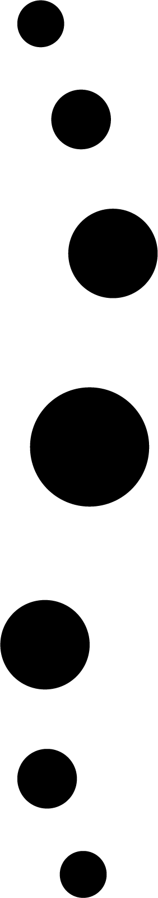
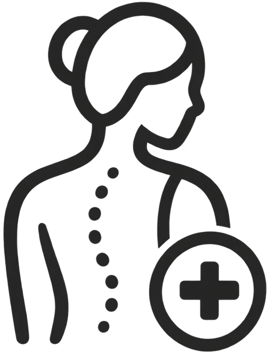
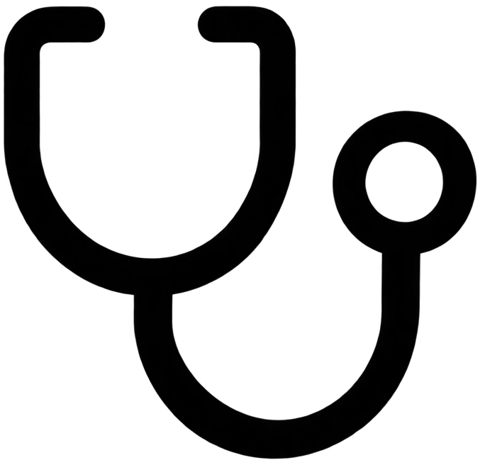

Klinikpersonale
>Hvad er SelfBack?
>Det vigtigste information
>Sådan vejleder du patienter i SelfBack
>FAQ
SelfBack er blevet anbefalet af Lægemiddelstyrelsen i Nævnet for Sundhedapps! Klik for at læse mere
>Hvad er SelfBack?
>Det vigtigste information
>Sådan vejleder du patienter i SelfBack
>FAQ
SelfBack er en app, der hjælper patienter der døjer med lænderygsmerter. Appen udarbejder et tilpasset program til den enkelte patient med øvelser og gode råd, som de kan udføre i hverdagen, med formålet om at lindre smerter, øge tryghed og blive mere fysisk aktive.

Kort om SelfBack
SelfBack er en evidensbaseret, medicinsk app, der er CE-mærket og udviklet og godkendt til det danske sundhedsvæsen.
SelfBack er Medicinsk Udstyr Klasse I (MDR)
SelfBack er den eneste app på markedet, der er godkendt af tre nationale myndigheder for medicinsk teknologivurdering (HTA) i Europa: Belgien, Danmark og NICE i England.
Hvad kan SelfBack appen?
Appen skræddersyer et træningsprogram til den enkelte patient på braggrund af en masse spørgsmål som patienten skal besvare inden de kan komme igang med at bruge appen. Appen holder også patienten oppe på at blive klogere på lænderygsmerter og hvordan man kan forbedre dette i en travl hverdag.
Alt data, omkring patienternes svar og aktivitet på appen, bliver opsamlet og rapporteres til jeres system, så det er nemt og hurtigt at kunne følge med i patienternes udvikling.

Hvem er målgruppen?
Målgruppen er voksne (18+) diagnosticeret med korte- og længerevarende uspecifikke lænderygsmerter i kategorien almindelige og ufarlige.

Hvordan får patienten adgang?
Ved henvisning fra en læge, hvor appen gives på recept, gratis, i 3 måneder.
Patienten kan også selv købe et forløb hos SelfBack for 249,- i måneden.
Hvor kan patienten læse mere?
Henvis til SelfBacks egen hjemmeside hvor man under “hvem er du?” og “patient” kan læse mere.
Uddel SelfBacks flyer, med information om appen.
Henvis til Sundhed.dk hvor appen er listet.